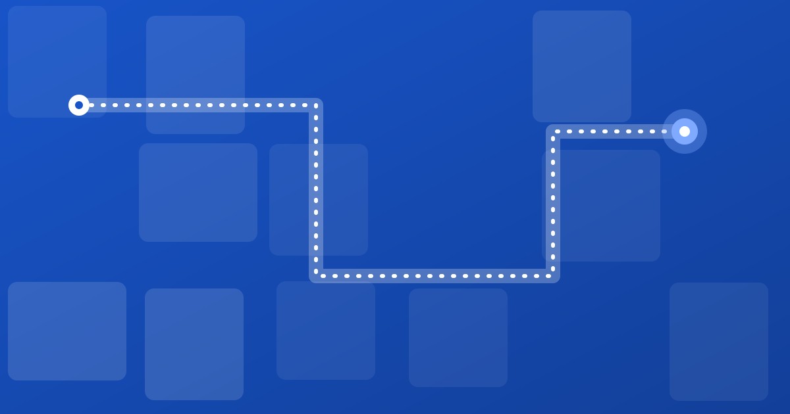

Mall indoor navigation: helping shoppers find stores, not give up
How shopping malls can use indoor navigation and wayfinding to help shoppers find stores, food and parking, and spend more time inside.
Anas KhanFounder, Areyos

A mall is built to be wandered. That works until a visitor has one specific thing to find, a limited amount of time and a phone with 12% battery. Then the layout is a maze.
What shoppers actually look for
- A named store, often on a different floor.
- A category: food, pharmacy, electronics, kids' wear.
- Services: toilets, ATMs, lifts, customer service.
- The car, after a long visit.
The cost of a lost shopper
Someone who cannot find a store may buy elsewhere, or head home. Multiply that by thousands of daily visitors and a small percentage matters. We show the arithmetic, with clearly illustrative numbers, in what getting lost costs.
What good mall wayfinding includes
- Directory boards at entrances and escalators that match what the map says.
- QR codes at decision points, opening directions on the shopper's own phone.
- Category search so shoppers can find “somewhere to eat” without knowing a name.
- Updated tenant lists, because stores open and close often.
- Parking links, so the journey starts before the lift.
Tenants and landlords
Tenants want visibility; shoppers want clarity. A clear route to a store helps both. Keep any promotional placement clearly separate from the directions themselves, so shoppers keep trusting the map.
Start small. Cover the main entrances, the food court and parking first, then expand to every floor once you have seen what shoppers search for.